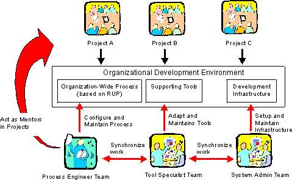

| Concept: Development Environment |
 |
|
| Related Elements |
|---|
Development Environment for a ProjectThe development environment for a software development project is the term for all things the project needs in order to develop and deploy the system, such as tools, guidelines, process, templates, and infrastructure. All of these are represented as work products in the Rational Unified Process listed below:
Organizational Development EnvironmentThere are often many similarities between different projects in a development organization. The projects use the same tools in a similar way. The process is similar between different projects and some guidelines are probably identical. Therefore, a development organization can gain from having a team to develop and maintain an organizational development environment that consists of an organization-wide process, tool use, and infrastructure. This environment team will have process engineers who develop and maintain an organization-wide process. By having an organization-wide process, the separate software development projects have to do less customization of the process because a lot of that would have already been done for the organization-wide process. The process engineers act as mentors on the individual software development projects. The environment team can also have a tool specialists who sets up and maintains the supporting tools. Tool specialists from this team could assist the individual software development projects to set up the tools. System administrators can also be part of the environment team.
 Process engineers, tools specialists, and system administrators develop a development environment for the organization. Test Environments
In most cases, the requirements for testing environments are more specific, detailed and rigorous than the basic
development environment. Test environments are often technically less sophisticated than the development environment
(the hardware requirements are less). There are also often multiple environments needing to support software testing
activities, in which the configuration of hardware and software will differ, representing different stakeholder
constraints. |

© Copyright IBM Corp. 1987, 2006. All Rights Reserved. |